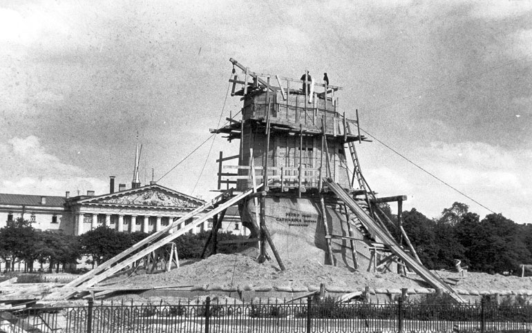
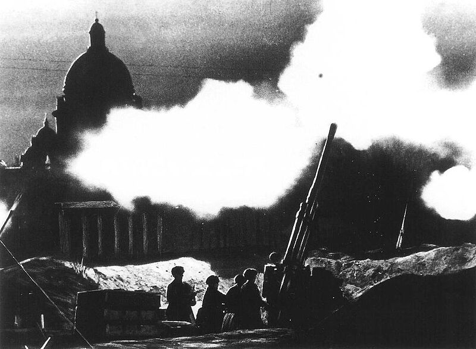

Блокада Ленинграда — военная блокада немецкими, финскими и испанскими (Голубая дивизия) войсками с участием добровольцев из Северной Африки, Европы и военно-морских сил Италии во время Великой Отечественной войны Ленинграда (ныне Санкт-Петербург). Длилась с 8 сентября 1941 года по 27 января 1944 года (блокадное кольцо было прорвано 18 января 1943 года) — 872 дня.
К началу блокады в городе не имелось достаточных по объёму запасов продовольствия и топлива. Единственным путём сообщения с Ленинградом оставалось Ладожское озеро, находившееся в пределах досягаемости артиллерии и авиации осаждающих, на озере также действовала объединённая военно-морская флотилия противника. Пропускная способность этой транспортной артерии не соответствовала потребностям города. В результате начавшийся в Ленинграде массовый голод, усугублённый особенно суровой первой блокадной зимой, проблемами с отоплением и транспортом, привёл к сотням тысяч смертей среди жителей.
После прорыва блокады осада Ленинграда вражескими войсками и флотом продолжалась до сентября 1944 года. Чтобы заставить противника снять осаду города, в июне — августе 1944 года советские войска при поддержке кораблей и авиации Балтийского флота провели Выборгскую и Свирско-Петрозаводскую операции, 20 июня освободили Выборг, а 28 июня — Петрозаводск. В сентябре 1944 года был освобождён остров Гогланд.
За массовый героизм и мужество в защите Родины в Великой Отечественной войне 1941—1945 гг., проявленные защитниками блокадного Ленинграда, согласно Указу Президиума Верховного Совета СССР 8 мая 1965 г. городу присвоена высшая степень отличия — звание Город-герой.
27 января является Днём воинской славы России — День полного освобождения советскими войсками города Ленинграда от блокады его немецко-фашистскими войсками (1944 год).
{kind=link}
{kind=link}